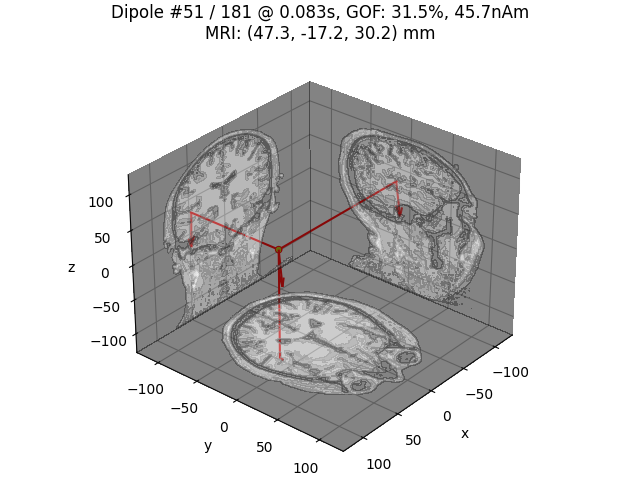

Note
Click here to download the full example code
Compute sparse inverse solution with mixed norm: MxNE and irMxNE¶
Runs an (ir)MxNE (L1/L2 1 or L0.5/L2 2 mixed norm) inverse solver. L0.5/L2 is done with irMxNE which allows for sparser source estimates with less amplitude bias due to the non-convexity of the L0.5/L2 mixed norm penalty.
# Author: Alexandre Gramfort <alexandre.gramfort@inria.fr>
# Daniel Strohmeier <daniel.strohmeier@tu-ilmenau.de>
#
# License: BSD (3-clause)
import numpy as np
import mne
from mne.datasets import sample
from mne.inverse_sparse import mixed_norm, make_stc_from_dipoles
from mne.minimum_norm import make_inverse_operator, apply_inverse
from mne.viz import (plot_sparse_source_estimates,
plot_dipole_locations, plot_dipole_amplitudes)
print(__doc__)
data_path = sample.data_path()
fwd_fname = data_path + '/MEG/sample/sample_audvis-meg-eeg-oct-6-fwd.fif'
ave_fname = data_path + '/MEG/sample/sample_audvis-ave.fif'
cov_fname = data_path + '/MEG/sample/sample_audvis-shrunk-cov.fif'
subjects_dir = data_path + '/subjects'
# Read noise covariance matrix
cov = mne.read_cov(cov_fname)
# Handling average file
condition = 'Left Auditory'
evoked = mne.read_evokeds(ave_fname, condition=condition, baseline=(None, 0))
evoked.crop(tmin=0, tmax=0.3)
# Handling forward solution
forward = mne.read_forward_solution(fwd_fname)
Out:
365 x 365 full covariance (kind = 1) found.
Read a total of 4 projection items:
PCA-v1 (1 x 102) active
PCA-v2 (1 x 102) active
PCA-v3 (1 x 102) active
Average EEG reference (1 x 59) active
Reading /home/circleci/mne_data/MNE-sample-data/MEG/sample/sample_audvis-ave.fif ...
Read a total of 4 projection items:
PCA-v1 (1 x 102) active
PCA-v2 (1 x 102) active
PCA-v3 (1 x 102) active
Average EEG reference (1 x 60) active
Found the data of interest:
t = -199.80 ... 499.49 ms (Left Auditory)
0 CTF compensation matrices available
nave = 55 - aspect type = 100
Projections have already been applied. Setting proj attribute to True.
Applying baseline correction (mode: mean)
Reading forward solution from /home/circleci/mne_data/MNE-sample-data/MEG/sample/sample_audvis-meg-eeg-oct-6-fwd.fif...
Reading a source space...
Computing patch statistics...
Patch information added...
Distance information added...
[done]
Reading a source space...
Computing patch statistics...
Patch information added...
Distance information added...
[done]
2 source spaces read
Desired named matrix (kind = 3523) not available
Read MEG forward solution (7498 sources, 306 channels, free orientations)
Desired named matrix (kind = 3523) not available
Read EEG forward solution (7498 sources, 60 channels, free orientations)
MEG and EEG forward solutions combined
Source spaces transformed to the forward solution coordinate frame
Run solver with SURE criterion 3
alpha = "sure" # regularization parameter between 0 and 100 or SURE criterion
loose, depth = 0.9, 0.9 # loose orientation & depth weighting
n_mxne_iter = 10 # if > 1 use L0.5/L2 reweighted mixed norm solver
# if n_mxne_iter > 1 dSPM weighting can be avoided.
# Compute dSPM solution to be used as weights in MxNE
inverse_operator = make_inverse_operator(evoked.info, forward, cov,
depth=depth, fixed=True,
use_cps=True)
stc_dspm = apply_inverse(evoked, inverse_operator, lambda2=1. / 9.,
method='dSPM')
# Compute (ir)MxNE inverse solution with dipole output
dipoles, residual = mixed_norm(
evoked, forward, cov, alpha, loose=loose, depth=depth, maxit=3000,
tol=1e-4, active_set_size=10, debias=False, weights=stc_dspm,
weights_min=8., n_mxne_iter=n_mxne_iter, return_residual=True,
return_as_dipoles=True, verbose=True, random_state=0)
t = 0.083
tidx = evoked.time_as_index(t)
for di, dip in enumerate(dipoles, 1):
print(f'Dipole #{di} GOF at {1000 * t:0.1f} ms: '
f'{float(dip.gof[tidx]):0.1f}%')
Out:
info["bads"] and noise_cov["bads"] do not match, excluding bad channels from both
Computing inverse operator with 364 channels.
364 out of 366 channels remain after picking
Selected 364 channels
Creating the depth weighting matrix...
203 planar channels
limit = 7262/7498 = 10.020866
scale = 2.58122e-08 exp = 0.9
Picked elements from a free-orientation depth-weighting prior into the fixed-orientation one
Average patch normals will be employed in the rotation to the local surface coordinates....
Converting to surface-based source orientations...
[done]
Whitening the forward solution.
Created an SSP operator (subspace dimension = 4)
Computing rank from covariance with rank=None
Using tolerance 3.5e-13 (2.2e-16 eps * 305 dim * 5.2 max singular value)
Estimated rank (mag + grad): 302
MEG: rank 302 computed from 305 data channels with 3 projectors
Using tolerance 1.1e-13 (2.2e-16 eps * 59 dim * 8.7 max singular value)
Estimated rank (eeg): 58
EEG: rank 58 computed from 59 data channels with 1 projector
Setting small MEG eigenvalues to zero (without PCA)
Setting small EEG eigenvalues to zero (without PCA)
Creating the source covariance matrix
Adjusting source covariance matrix.
Computing SVD of whitened and weighted lead field matrix.
largest singular value = 6.21995
scaling factor to adjust the trace = 6.82623e+18 (nchan = 364 nzero = 4)
Preparing the inverse operator for use...
Scaled noise and source covariance from nave = 1 to nave = 55
Created the regularized inverter
Created an SSP operator (subspace dimension = 4)
Created the whitener using a noise covariance matrix with rank 360 (4 small eigenvalues omitted)
Computing noise-normalization factors (dSPM)...
[done]
Applying inverse operator to "Left Auditory"...
Picked 364 channels from the data
Computing inverse...
Eigenleads need to be weighted ...
Computing residual...
Explained 69.4% variance
dSPM...
[done]
Converting forward solution to surface orientation
Average patch normals will be employed in the rotation to the local surface coordinates....
Converting to surface-based source orientations...
[done]
info["bads"] and noise_cov["bads"] do not match, excluding bad channels from both
Computing inverse operator with 364 channels.
364 out of 366 channels remain after picking
Selected 364 channels
Creating the depth weighting matrix...
Applying loose dipole orientations to surface source spaces: 0.9
Whitening the forward solution.
Created an SSP operator (subspace dimension = 4)
Computing rank from covariance with rank=None
Using tolerance 3.5e-13 (2.2e-16 eps * 305 dim * 5.2 max singular value)
Estimated rank (mag + grad): 302
MEG: rank 302 computed from 305 data channels with 3 projectors
Using tolerance 1.1e-13 (2.2e-16 eps * 59 dim * 8.7 max singular value)
Estimated rank (eeg): 58
EEG: rank 58 computed from 59 data channels with 1 projector
Setting small MEG eigenvalues to zero (without PCA)
Setting small EEG eigenvalues to zero (without PCA)
Creating the source covariance matrix
Adjusting source covariance matrix.
Reducing source space to 543 sources
Whitening data matrix.
Warm starting...
alpha: 100.0
alpha: 84.83428982440721
alpha: 71.96856730011521
alpha: 61.0540229658533
alpha: 51.794746792312125
alpha: 43.939705607607905
alpha: 37.2759372031494
alpha: 31.622776601683793
alpha: 26.826957952797258
alpha: 22.758459260747887
alpha: 19.306977288832506
alpha: 16.378937069540648
alpha: 13.894954943731374
alpha: 11.787686347935878
alpha: 10.0
Fitting SURE on grid.
alpha: 100.0
Convergence reached after 3 reweightings!
alpha: 84.83428982440721
Convergence reached after 3 reweightings!
Convergence reached after 2 reweightings!
alpha: 71.96856730011521
Convergence reached after 3 reweightings!
Convergence reached after 2 reweightings!
alpha: 61.0540229658533
Convergence reached after 2 reweightings!
Convergence reached after 2 reweightings!
alpha: 51.794746792312125
Convergence reached after 2 reweightings!
Convergence reached after 2 reweightings!
alpha: 43.939705607607905
Convergence reached after 2 reweightings!
Convergence reached after 2 reweightings!
alpha: 37.2759372031494
Convergence reached after 3 reweightings!
Convergence reached after 3 reweightings!
alpha: 31.622776601683793
Convergence reached after 2 reweightings!
Convergence reached after 2 reweightings!
alpha: 26.826957952797258
Convergence reached after 2 reweightings!
Convergence reached after 2 reweightings!
alpha: 22.758459260747887
Convergence reached after 4 reweightings!
Convergence reached after 2 reweightings!
alpha: 19.306977288832506
Convergence reached after 3 reweightings!
Convergence reached after 3 reweightings!
alpha: 16.378937069540648
Convergence reached after 2 reweightings!
Convergence reached after 4 reweightings!
alpha: 13.894954943731374
Convergence reached after 2 reweightings!
Convergence reached after 4 reweightings!
alpha: 11.787686347935878
Convergence reached after 3 reweightings!
Convergence reached after 3 reweightings!
alpha: 10.0
Convergence reached after 3 reweightings!
Convergence reached after 5 reweightings!
Computing SURE values on grid.
alpha 100.0 :: sure -60279.603691664546
alpha 84.83428982440721 :: sure -60427.968488224076
alpha 71.96856730011521 :: sure -60314.408762264786
alpha 61.0540229658533 :: sure -60175.016856684924
alpha 51.794746792312125 :: sure -59917.854237862106
alpha 43.939705607607905 :: sure -59559.38293314512
alpha 37.2759372031494 :: sure -58966.5742920316
alpha 31.622776601683793 :: sure -58773.60466574142
alpha 26.826957952797258 :: sure -58041.513452541556
alpha 22.758459260747887 :: sure -56994.004916967075
alpha 19.306977288832506 :: sure -54514.86544940348
alpha 16.378937069540648 :: sure -53075.90075460742
alpha 13.894954943731374 :: sure -50500.30736702784
alpha 11.787686347935878 :: sure -48767.34216125909
alpha 10.0 :: sure -45495.9423800694
Selected alpha: 84.83428982440721
Explained 22.5% variance
[done]
Dipole #1 GOF at 83.0 ms: 8.1%
Dipole #2 GOF at 83.0 ms: 33.5%
Plot dipole activations
plot_dipole_amplitudes(dipoles)
# Plot dipole location of the strongest dipole with MRI slices
idx = np.argmax([np.max(np.abs(dip.amplitude)) for dip in dipoles])
plot_dipole_locations(dipoles[idx], forward['mri_head_t'], 'sample',
subjects_dir=subjects_dir, mode='orthoview',
idx='amplitude')
# Plot dipole locations of all dipoles with MRI slices
for dip in dipoles:
plot_dipole_locations(dip, forward['mri_head_t'], 'sample',
subjects_dir=subjects_dir, mode='orthoview',
idx='amplitude')

- 
Plot residual
ylim = dict(eeg=[-10, 10], grad=[-400, 400], mag=[-600, 600])
evoked.pick_types(meg=True, eeg=True, exclude='bads')
evoked.plot(ylim=ylim, proj=True, time_unit='s')
residual.pick_types(meg=True, eeg=True, exclude='bads')
residual.plot(ylim=ylim, proj=True, time_unit='s')

Generate stc from dipoles
stc = make_stc_from_dipoles(dipoles, forward['src'])
Out:
Converting dipoles into a SourceEstimate.
[done]
View in 2D and 3D (“glass” brain like 3D plot)
solver = "MxNE" if n_mxne_iter == 1 else "irMxNE"
plot_sparse_source_estimates(forward['src'], stc, bgcolor=(1, 1, 1),
fig_name="%s (cond %s)" % (solver, condition),
opacity=0.1)
Out:
Total number of active sources: 2
Morph onto fsaverage brain and view
morph = mne.compute_source_morph(stc, subject_from='sample',
subject_to='fsaverage', spacing=None,
sparse=True, subjects_dir=subjects_dir)
stc_fsaverage = morph.apply(stc)
src_fsaverage_fname = subjects_dir + '/fsaverage/bem/fsaverage-ico-5-src.fif'
src_fsaverage = mne.read_source_spaces(src_fsaverage_fname)
plot_sparse_source_estimates(src_fsaverage, stc_fsaverage, bgcolor=(1, 1, 1),
fig_name="Morphed %s (cond %s)" % (solver,
condition), opacity=0.1)
Out:
Reading a source space...
[done]
Reading a source space...
[done]
2 source spaces read
Total number of active sources: 2
References¶
- 1
Alexandre Gramfort, Matthieu Kowalski, and Matti S. Hämäläinen. Mixed-norm estimates for the M/EEG inverse problem using accelerated gradient methods. Physics in Medicine and Biology, 57(7):1937–1961, 2012. doi:10.1088/0031-9155/57/7/1937.
- 2
Daniel Strohmeier, Jens Haueisen, and Alexandre Gramfort. Improved MEG/EEG source localization with reweighted mixed-norms. In Proceedings of PRNI-2014, 1–4. Tübingen, 2014. IEEE. doi:10.1109/PRNI.2014.6858545.
- 3
Charles-Alban Deledalle, Samuel Vaiter, Jalal Fadili, and Gabriel Peyré. Stein unbiased gradient estimator of the risk (sugar) for multiple parameter selection. SIAM Journal on Imaging Sciences, 7(4):2448–2487, 2014. URL: https://doi.org/10.1137/140968045, doi:10.1137/140968045.
Total running time of the script: ( 2 minutes 3.970 seconds)
Estimated memory usage: 436 MB